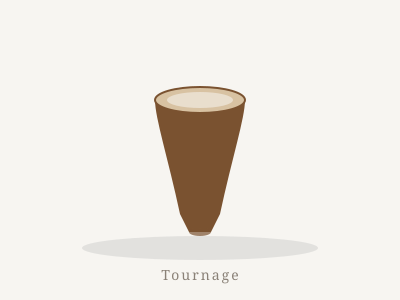
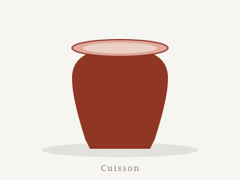
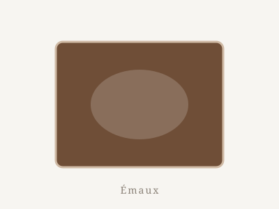

L'atelier
La pratique
Un métier de gestes et de patience : tourner, cuire, émailler. Trois savoir-faire que j'exerce à l'atelier, du premier centrage à la dernière fournée.

Le tournage
Je tourne des gobelets en grès de Saint-Amant, une argile d'origine naturelle — à chamotte ou non selon la pièce. Le grès donne des pièces denses et résistantes, adaptées à un usage quotidien.
Le gobelet est pour moi un exercice permanent de précision : une paroi régulière de deux à trois millimètres, un bord affûté, une base stable.
Ce qui compte
- L'ergonomie : la courbe du corps, l'angle du bord, la place des doigts.
- Le tournassage : après le tournage, je reprends chaque pièce sur le tour pour affiner le pied et la base.
- L'épaisseur : une paroi fine mais assez solide pour survivre à la cuisson.
- Le séchage : un séchage lent et contrôlé pour éviter les tensions dans la pièce.

La cuisson
Céramiste complet, je mène moi-même mes cuissons dans mon four : d'abord le biscuit (vers 980 °C), qui durcit la pièce et la rend poreuse, prête à recevoir l'émail.
Après émaillage, la cuisson de glaçure monte jusqu'à environ 1240 °C. Je surveille chaque courbe, chaque palier, car la couleur et la tenue de l'émail se jouent dans ces derniers degrés.
Les étapes
- Biscuit à ~980 °C
- Émaillage par trempage
- Cuisson de glaçure à ~1240 °C
- Refroidissement lent — le four n'est ouvert qu'après 24 h

Les émaux
Je réalise mes émaux à l'atelier à partir de recettes testées tuile après tuile. Je privilégie les matériaux non polluants et les oxydes d'origine naturelle — le fer, et parfois le cuivre — pour colorer sans nuire à la santé ni à l'environnement.
Une même base peut donner des teintes différentes selon la cuisson et l'épaisseur de couche. Les émaux sont appliqués par trempage, pour une couche régulière et un geste simple à maîtriser.
Mes axes de recherche
- Compositions sans plomb, à base d'oxydes non polluants : fer, parfois cuivre
- Émaux appliqués par trempage
- Recettes testées et notées tuile après tuile, pensées pour l'usage alimentaire
Imaginer sa pièce
Avant de tourner, j'aime modéliser : le générateur de gobelets me permet d'essayer des dimensions, des anneaux et des matériaux — jusqu'au volume cuit.
Ouvrir le générateur →